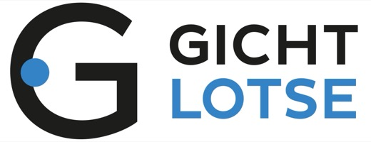

Für Männer ab 45 mit Gicht
In 14 Tagen vom Ernährungschaos zu einem klaren Plan
Das einfache 3+3-System zeigt dir, was du einschränkst und was du bewusst isst. Ohne komplizierte Diät, ohne Verbotstabellen, ohne stundenlange Recherche.
Ein einziger Zeh hat mein Leben verändert
Juni 2012, ein heißer Sommertag auf einem Seminar. Plötzlich war mein großer Zeh knallrot und geschwollen, ich trippelte wie ein 87-Jähriger durch den Tag, bis nur noch die Notaufnahme half. Die Diagnose: Gicht. Danach las ich Magazine, fragte Ärzte und Ernährungsberater und war am Ende verwirrter als vorher, denn jeder sagte mir nur, was ich weglassen soll. Die Wende kam mit einer Frage über Whey: Was kann ich bewusst essen, statt nur zu verzichten? Daraus wurde mein 3+3-System mit 3 Gruppen, die ich einschränke, und 3, die ich gezielt nutze, und bei den ärztlichen Kontrollen lagen meine Werte später in einem Bereich, den mein Arzt als unkritisch einstufte.
★★★★★
Thomas will keine Medikamente nehmen und stellt seine Ernährung um. Nach zwei Wochen sagt seine Frau am Telefon: „Er war beim Arzt und hat die Ergebnisse seiner Blutwerte. Thomas ist stolz wie ein Putzeimer. So gute Werte hatte er noch nie!“
Thomas, 54 Jahre
★★★★★
„Mein ganzer Fuß ist voller Ablagerungen, mein Arzt konnte mir nicht weiterhelfen. Durch Deine Tipps habe ich wieder Orientierung gefunden und weiß, dass es Lösungen gibt.“
Michael, 55 Jahre
★★★★★
Monika startet mit einem Harnsäurewert von 10,4 mg/dl. Nach knapp zwei Wochen schreibt sie per WhatsApp: „Weiterhin halte ich mich an die Vorgaben. Und nun sende ich meine Werte!!! 8,2 Trallalalala.“
Monika
Jochen Hein, Biologe und Heilpraktiker. Ich lebe seit 2012 mit Gicht, habe 2 bis 3 Jahre lang Tabletten genommen und als Biologe die Studien zur Ernährung bei Gicht selbst ausgewertet. Daraus entstand mein 3+3-System, und bei den ärztlichen Kontrollen lagen meine Werte später im unkritischen Bereich. Heute gebe ich dir den Plan, den ich mir damals gewünscht hätte.
14 Tage Geld-zurück-Garantie: Teste GICHTKLAR 14 in Ruhe. Passt es nicht zu deinem Alltag, bekommst du deine 37 € zurück, ohne Angabe von Gründen. Einmalzahlung, kein Abo.